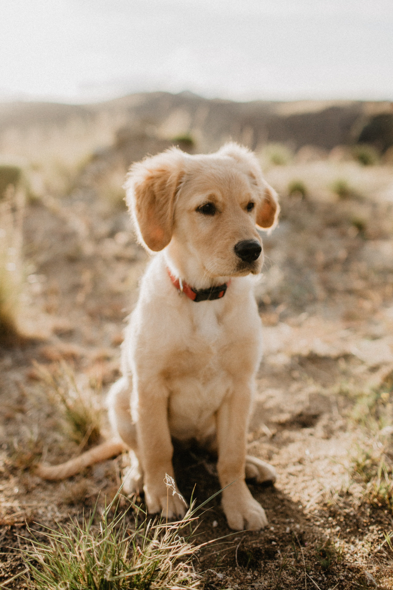

Design Challenge
Defining the Design Challenge was the first aspect of the website redeesign process. The worksheet designed by IDEO helped me identify the main challenge that my website design would solve. Identifying this early framed the way I approached my research.